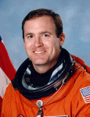

Lyndon B. Johnson Space Center
Houston, Texas 77058
|
National Aeronautics and Space Administration Lyndon B. Johnson Space Center Houston, Texas 77058 |
 |
Biographical Data |
||
James Donald Halsell, Jr., (Colonel, USAF, Ret.)
NASA ASTRONAUT (FORMER)
PERSONAL DATA: Born September 29, 1956, in West Monroe, Louisiana, where his parents, Don and Jean Halsell, reside. Married to the former Kathy D. Spooner of Merritt Island, Florida, where her parents, Charles and Lynn Spooner, reside. They have a son and a daughter. He enjoys snow skiing, water skiing and light aircraft flying.
EDUCATION: Graduated from West Monroe High School, West Monroe, Louisiana, in 1974. Received a bachelor of science degree in engineering from the United States Air Force (USAF) Academy in 1978, a master of science degree in management from Troy University in 1983, and a master of science degree in space operations from the Air Force Institute of Technology in 1985.
SPECIAL HONORS: Graduated first in his test pilot school class and awarded the Liethen/Tittle Trophy (1986). Recipient of the Distinguished Flying Cross (1998), the NASA Space Flight Medal (1994, 1995, 1997, 2000), the NASA Distinguished Service Medal (2001), and the NASA Outstanding Leadership Medal (2002, 2004).
AIR FORCE EXPERIENCE: Halsell graduated from the U.S. Air Force Academy in 1978, and from Undergraduate Pilot Training at Columbus Air Force Base, Mississippi, in 1979. An F-4 pilot qualified in conventional and nuclear weapons deliveries, he served at Nellis Air Force Base, Las Vegas, Nevada, from 1980-1981, and Moody Air Force Base, Valdosta, Georgia, from 1982-1984. In 1984-1985, he was a graduate student at the Air Force Institute of Technology, Wright-Patterson Air Force Base, Dayton, Ohio. He then attended the Air Force Test Pilot School at Edwards Air Force Base, California, and during the next four years he performed test flights in the F-4, the F-16, and the SR-71 aircraft. Halsell retired from the Air Force in July 2004.
NASA EXPERIENCE: Selected by NASA in January 1990, Halsell became an astronaut in July 1991. A five flight veteran, Halsell has logged over 1,250 hours in space. He was the pilot on STS-65 (July 8-23, 1994) and STS-74 (November 12-20, 1995), and commanded STS-83 (Apr 4-8, 1997), STS-94 (July 1-17, 1997) and STS-101 (May 19-29, 2000). From February-August 1998, he served as NASA Director of Operations at the Yuri Gagarin Cosmonaut Training Center, Star City, Russia. Halsell also served as Manager, Shuttle Launch Integration, Kennedy Space Center, Florida, from July 2000-January 2003. Following the Columbia accident, Halsell led NASA’s Space Shuttle Return-to-Flight Planning Team. He then served as the Assistant Director for Aircraft Operations, Flight Crew Operations Directorate. Halsell retired from NASA in November 2006 to accept a position with ATK Launch Systems, Utah.
ADDITIONAL MISSION DETAILS: STS-65 flew the second International Microgravity Laboratory (IML-2). During the 15-day flight the crew conducted more than 80 experiments focusing on materials and life sciences research in microgravity. The mission was accomplished in 236 orbits of the Earth, traveling 6.1 million miles in 353 hours and 55 minutes.
STS-74 was NASA's second Space Shuttle mission to rendezvous and dock with the Russian Space Station Mir. During the 8-day flight the Atlantis crew successfully attached a permanent docking module to Mir and transferred over 2,000 pounds of food, water and scientific supplies for use by the cosmonauts. The STS-74 mission was accomplished in 129 orbits of the Earth, traveling 3.4 million miles in 196 hours, 30 minutes, 44 seconds.
STS-83, the Microgravity Science Laboratory (MSL-1) Spacelab mission, was cut short because of problems with one of the Shuttle's three fuel cell power generation units. Mission duration was 95 hours and 12 minutes, traveling 1.5 million miles in 63 orbits of the Earth.
STS-94, a re-flight of the Microgravity Science Laboratory (MSL-1) Spacelab mission, focused on materials and combustion science research in microgravity. Mission duration was 376 hours and 45 minutes, traveling 6.3 million miles in 251 orbits of the Earth.
STS-101 was the third Shuttle mission devoted to International Space Station (ISS) construction. Objectives included transporting and installing over 5,000 pounds of equipment and supplies, and conducting a space walk. The mission was accomplished in 155 orbits of the Earth, traveling 4.1 million miles in 236 hours and 9 minutes.
NOVEMBER 2006